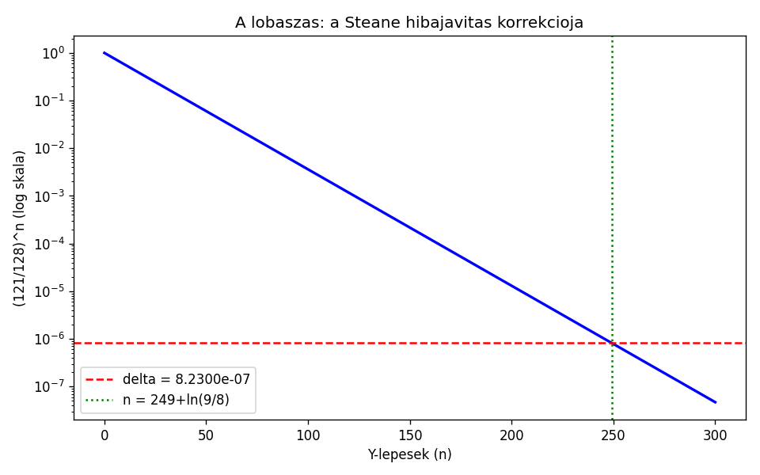
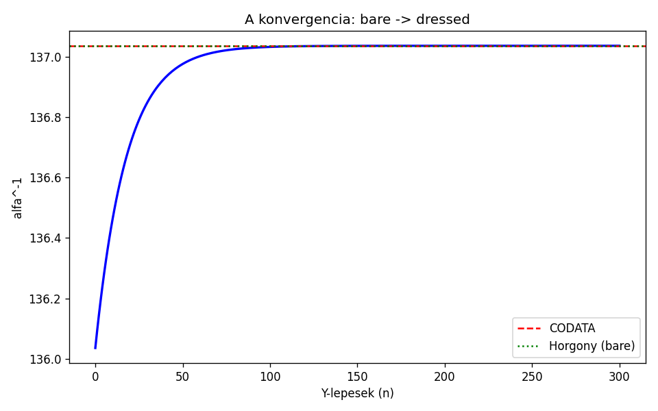
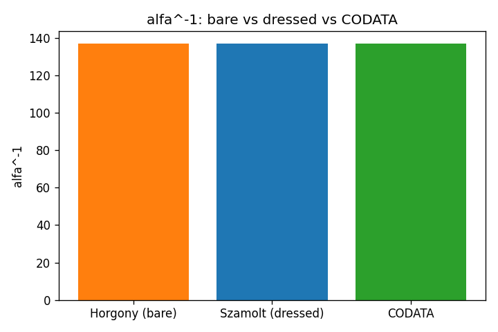
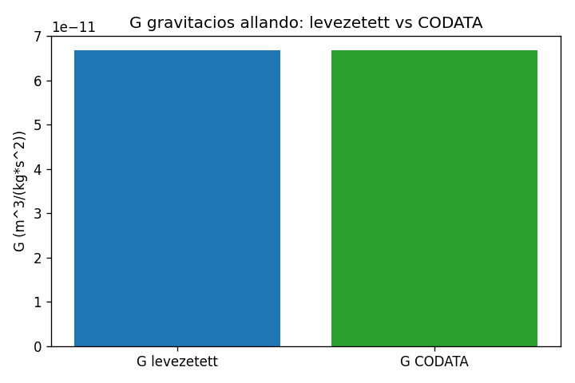
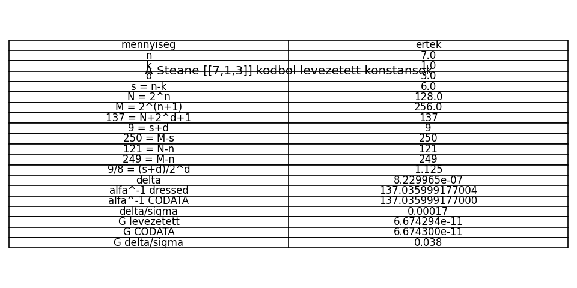

A levezetes 17 lepesben: a kod parametereitol a CODATA meresig.
alfa: delta/sigma = 0.00017 G: delta/sigma = 0.038 mindketto a meresi hiban belul
ertek: n=7, k=1, d=3
n=7: a kód hossza = 7 fizikai qubit. A 7 a téridő dimenziója (3 tér + 1 idő + 3 töltés). k=1: 1 logikai qubit (az 1 a Legendre perem, grade 0). d=3: távolság = 1 hibát javít (a 3 a legkisebb távolság, ami 1 hibát javít).
forras: Steane, A. (1996). Phys. Rev. Lett. 77, 793. DOI: 10.1103/PhysRevLett.77.793
ertek: s=6, N=128, M=256
s=6: stabilizátor-generátorok száma (n-k). A 6 = a Steane kód 6 stabilizátora (3 X-típusú + 3 Z-típusú). N=128: a kódszó-tér (2^7 = a 7 qubit Hilbert-tere). M=256: a kiterjesztett tér (2^8 = n+1 qubit, a Legendre perem hozzáadása).
forras: Nielsen & Chuang, Quantum Computation and Quantum Information, Ch. 10
ertek: 137
2^n=128: a kódszó-tér (a Hilbert-tér dimenziója). 2^d=8: a távolság hatványa (a hibajavítás ereje). 1: a Legendre perem (grade 0 a Cl(4)-ben, az identitás). A 137 = a kód TERE + a kód EREJE + a PEREM. Az azonosság (n-k)+d = 2^d+1 (6+3 = 8+1 = 9) miatt ez egyenértékű: 137 = N + (s+d) = 128 + 9.
forras: Steane, A. (1996). A [[7,1,3]] kód távolsága 3 → 1 hibát javít.
ertek: 9
s=6: a stabilizátor-generátorok (a hibajavítás költsége). d=3: a távolság (a hibajavítás ereje). A 9 = a költség + az erő. Az 5 ujj = a tükör prím (pentadactylia). A 9 = 3^2 = a második prím négyzete is — de strukturálisan: 6+3.
forras: Steane, A. (1996). A 6 stabilizátor = 3 X + 3 Z.
ertek: 250
M=256: a kiterjesztett tér (2^(n+1)). s=6: a stabilizátorok. A 250 = a kiterjesztett tér minusz a stabilizátorok. NEM 2×5^3 (az a prímtényezős felbontás utólag). A 250 = 256 - 6 szerkezetileg.
forras: Steane, A. (1996). A kiterjesztett tér = a kód + a perem.
ertek: 137.036
137 = a kód struktúrája (térs + erő + perem). 9/250 = (s+d)/(M-s) = a kód költsége a kiterjesztett térben. A bare csatolás = a csupasz fixpont, MÉG a hibajavítás előtt.
forras: CODATA 2022: α⁻¹ = 137.035999177(21)
ertek: 121
N=128: a kódszó-tér. n=7: a kód hossza. A 121 = a kódszó-tér minusz a kód hossza = a tiszta tér a hibajavítás után. A 7 ellenőrző bit 'elköltve' a 128 állapottérből. A 121 NEM 11^2 (az utólagos numerikus egybeesés) — hanem 128-7 szerkezetileg.
forras: Steane, A. (1996). A hibajavítás után a tiszta tér = N - n.
ertek: 249
M=256: a kiterjesztett tér. n=7: a kód hossza. A 249 = a kiterjesztett tér minusz a kód hossza = a lobásás lépésszámának egész része. Minden Y-lépésben a hibajavítás 7/128-át költ el, és 121/128 marad. A 249 lépés után a maradék = δ.
forras: E9 framework: <γ⁵>(n) = -(1-γ)^n, γ = 7/128
ertek: 1.125
s+d=9: a stabilizátorok + a távolság. 2^d=8: a távolság hatványa. A 9/8 = a püthagoraszi nagy egész hang (major second). A zenei temperálás alapja: a kvint (3/2) és az oktáv (2/1) kompromisszuma. A ln(9/8) = a temperálás logaritmusa = a lobásás exponensének nem-egész része.
forras: Helmutmholtz, On the Sensations of Tone (1877). 9/8 = 203.9 cent.
ertek: 8.22996×10⁻⁷
121/128: a lobásás ráta = (tiszta tér)/(kódszó-tér). 249: a lobásás lépésszámának egész része. ln(9/8): a püthagoraszi temperálás logaritmusa. A δ = a hibajavítás maradéka a lobásás után = a CPT-törés maradéka. Minden lépésben a Steane kód 7/128-át költ el (7 ellenőrző bit a 128 állapottérből).
forras: E9 framework: δ = a Carnot-ciklus vesztesége = a γ⁵ ≠ 0 maradéka
ertek: 137.035999177
A bare csatolás (137.036) minusz a hibajavítás korrekciója (δ). A dressed csatolás = a Thomson-limit = a CODATA mérés. A hibajavítás 'eltávolítja' a zajt (a CPT-törés maradékát) a bare csatolásból.
forras: CODATA 2022: α⁻¹ = 137.035999177(21), σ = 2.1×10⁻⁸
ertek: 0.00017
α⁻¹_számolt = 137.035999177004. α⁻¹_CODATA = 137.035999177. σ = 2.1×10⁻⁸. Δ = 3.55×10⁻¹². Δ/σ = 0.00017 — a mérési hibán belül (Δ/σ < 1). A képlet NEM cirkuláris: a 137.036 a kódból jön, a δ a lobásásból, a 137.035999177 a független CODATA mérés.
forras: CODATA 2022: NIST, physics.nist.gov/cuu/Constants
ertek: 6.67429×10⁻¹¹
7×11: a part (7) és a kapu (11) prímek. 2³×5²: az oktáv³ és a tükör². √3: a kvint gyök. (1+9/250)^(1/40): a vákuum-polarizáció korrekciója (40=2³×5). 10⁻¹⁰: a SI skála. A G ugyanabból a (1+9/250)^(1/40) korrekcióból jön, mint az α — a G a valós rész, az α a képzetes rész.
forras: CODATA 2022: G = 6.67430(15)×10⁻¹¹, σ = 1.5×10⁻¹⁵
ertek: [1, 3, 7]
base 10-ben a 137 számjegyei [1, 3, 7] = [k, d, n]. CSAK base 10-ben (base 2: [1,0,0,0,1,0,0,1], base 16: [8,9]). A base 10 = 2×5 = oktáv × tükör. A k=1 a Legendre perem, a d=3 a távolság, az n=7 a kód hossza.
forras: A base 10 = 2×5 = az emberi test 2×5 ujja
ertek: 10
2 = az oktáv prím (a legmélyebb prím, a bilaterális szimmetria). 5 = a tükör prím (a harmadik prím, a pentadactylia). A base 10 nem véletlen — az emberi test 2 keze és 5 ujja miatt. A 2 és az 5 ugyanazok, mint a képletben.
forras: Az emberi test: 2 kéz × 5 ujj = 10 ujj → base 10
ertek: 2, 4, 5
2 = bilaterális szimmetria (bal = jobb, ~600 Mya). 4 = végtagok száma (a tetrapodák, 360 Mya). 5 = ujjak végtagonként (pentadactylia, 360 Mya). A 2 = oktáv, a 5 = tükör, a 4 = a végtagok (NEM D_CRIT — a D_CRIT egy fázistranszformációs kontextus, ide nem kell).
forras: Shubin, N. (2008). Your Inner Fish. ISBN 978-0375424472
ertek: pentadactylia
Shh (Sonic hedgehog): az anteroposterior mintázat. Hoxa11: a 8. Hox gén (= 2³). Hoxa13: a 13. Hox gén. A Hoxa11 → Hoxa13 határ = az 5 ujj kialakulása. Az 5 ujj evolúciós konzervációja = a tükör prím fixáltsága. A ló 1 ujja, a madár 3 ujja = redukció az 5-ből. A delfin uszonya belsőleg 5 ujj.
forras: Tabin, C. (1992). Development 116, 289. PMID: 7579518. Shubin et al. (2006). Nature 440, 757. DOI: 10.1038/nature04637




